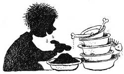
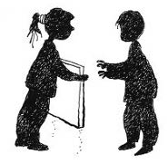
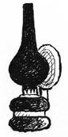

Akşam evde şenlik vardı neredeyse, hepsi Müzeyyen Babaanne’nin yaptığı şahane yemeği yedi. Zafer üç tabak yedi. Zafer, Erim’in en yakın arkadaşıydı. Aynı yıl doğmuşlardı. Emeklemeye başladıklarından beri arkadaştılar. Anneleri de çok iyi arkadaştı. Şimdi Zafer’in annesi Sevim Teyze; Erim, Simin ve Sanem’e de annelik yapmaya çalışıyordu.

Zafer; tombul (üç tabaktan anlamışsınızdır zaten), kırmızı yanaklı, dik fırça saçlı, çok efendi bir çocuktu. Tahmin edemeyeceğiniz kadar cesur, tahmin edemeyeceğiniz kadar da korkaktı. Cesurluğu şöyle; arkadaşları için her fedakârlığı yapar, her tehlikeye girer; ama horoz, tavuk, sinek, kedi gibi her türlü zararsız hayvandan korkar, üstüne üstlük şeftaliye dokunamazdı. Bir de ön iki dişi fazla tavşan gibi olduğundan “t”leri “s”, “r”leri “y”, “k”leri “h” şeklinde söyleme özelliğini de saymalıyız. Aslında konuşurken doğru söyleyebildiği birkaç harf vardı diyebiliriz. Daha doğrusu, genelde düzgün konuşurken korktuğunda, heyecanlandığında, çok sevindiğinde tüm harfler birbirine karışıyordu; o zaman söylediklerini bir tek Erim anlayabiliyordu.
Yemekten sonra Müzeyyen Babaanne yaptığı tatlıyı getirdi, hep bir ağızdan bağırdılar:
— Doğum günün kutlu olsun Eriiimm!
Erim’in yanakları al al oldu, “Teşekkür ederim” diyebildi. İlk hediyeyi ikizler, Sanem ve Simin verdiler; kendi yaptıkları bir resim (sanat şaheseri sayılmaz). Zafer tahtadan yaptığı kılıcı verdi; işlemeleri olan, el oyması çok güzel bir kılıç.
— Sağ ol Bönbön...
Bu, Erim’in Zafer’e taktığı isimdi.
— Rica ederim Canci...
Zafer de Erim’e Canci diyordu.
— İki aydır üstüm başım talaş oldu, sana kılıç yapacağım diye.
En son Nisan hediye paketini verdi, kırmızı renkte şahane paketlenmiş bir hediye. Erim paketi açtı, içinden çok güzel bir yağlı boya tablo çıktı. Bu, bir manzara resmiydi. Arkada bir dağ, önünde yıkılmış taş binalar, belli belirsiz deniz görüntüsü ve incir ağaçları vardı.
— Bunu annem seçti, dedem Osman Hamdi Bey’in yaptığı bir yağlı boya.
— Çok güzel bir resim bu.
İkizler aynı anda bağırdılar:
— Bizimki daha güzel ama! Biz güneş de çizdik.
— Tabii ki sizin resminiz daha güzel, bu da fena değil, Nisan. Deden bir şeyler boyamış ama biraz kendini geliştirmesi lazım, değil mi Bönbön?

— Haklısın Canci, daha bir fırın ekmek yemesi lazım, bu ikisinin seviyesine gelmesi için.
— Dedem on sekiz yıl önce vefat ettiği için bu gelişme işi imkânsız, belki ben onun yerine çaba gösteririm artık, dedi Nisan gülümseyerek.
— Onun resmi de güzel Nisan Abla, dedi Sanem.
Nisan, Sanem’in başını okşadı.
— Benim hediyemi merak ediyorsundur, dedi Müzeyyen Babaanne.
Bu arada kusura bakmayın, hâlâ size babaanneyi tanıtmadım. Kilolu değildi ama görebileceğiniz en tonton yanaklara sahipti, gözleri hep gülerdi ve şefkatliydi, başındaki hafif bir başörtüsünden görülebilen saçının yarısı gri, yarısı da beyazdı. Gözleri de gri miydi ne? Yaşı nedeniyle biraz eğik yürürdü. Tam bir İstanbul hanımefendisiydi.
— Aslında Erim, emin ol ben senden daha çok merak ediyorum.
— Niye babaanne?
— Tam sekiz yıldır bu anı bekliyorum!
Bunu söylerken ellerinin ve dudaklarının titrediği açıkça görülüyordu. Çocuklar, babaannelerini hiç böyle görmemişlerdi; hep sakin, huzurlu, hiçbir şeyden telaş etmeyen babaanneleri; şimdi karşılarında rengi sararmış, heyecanlanmış, küçülmüş bir çocuk gibiydi.
— Çekin bakalım şu somyayı.
Zafer hareket edene kadar bir taraftan Nisan ve ikizler, diğer taraftan Erim divanı itti. Ortaya çıkan izden belliydi ki yıllardır yerinden hiç oynamamıştı divan. Babaanne eline bastonunu aldı ve yerdeki tahtalardan birine hızla vurdu; biraz ileride başka bir tahta döşemenin yerinden oynadığını gördüler. Müzeyyen Babaanne birkaç adım attı, heyecandan hiçbiri konuşmuyordu, ikizler bile susmuştu. Pencerenin önündeki saka kuşunun dahi çıtı çıkmıyordu. Sessizliği, bahçedeki büyük erguvana tünemiş puhu kuşunun sesi bozdu:
— Puuuu puuuuu.
Yaşlı kadın tahtayı yerinden söktü; altında aynı renk ve şekildeki bir tahtadan başka bir şey yoktu. Onu da yerinden özenle çıkardı ve tahtayı ters çevirdi, arka tarafta hafif yeşillenmiş pirinçten bir anahtar ve bir mektup duruyordu.

Babaanne mektubu çıkardı, birkaç kere öptü, kokladı. “Yiğidim, canım, Erdoğan’ım...” diye mırıldandığını duydu çocuklar. Ayağa kalktı; gözünde yaşlar, donuk bakışlar, göğsüne bastırdığı ellerinde mektup ve anahtar... Sanki adımlar kendinin değilmiş gibi ileri doğru bakarak üç katlı yorgun ahşap köşkün en üst katına çıkmaya başladı. Çocuklar da bu büyülü atmosferden etkilenmişti ve babaannelerinin arkasından sessizce, ördek yavruları gibi merdivenlerden yukarı doğru çıkmaya başladılar.
Çatı katının kapısını açarken hepsi çok heyecanlıydı. Çünkü hiçbiri o odaya girmemişti bugüne kadar, “Orası yasak!” derdi babaanneleri –kendisi bile hiç girmemişti yıllardır oraya. Erim’in durumunu düşünün, bir evde yaşıyorsun, bir odaya on iki yıldır hiç girmemişsin. Müzeyyen Nine’nin mırıldandığını duydular, dualar okuyordu, “Amin” dedi ve kapıyı açtı. Yemin ederim, o kilidin açılış tıkırtısını en alt kattaki mutfak dolabının çekmecesinde yaşayan hamam böceği İsmet Abi duymuştur. Bahçedeki karınca Haydar dikkat kesildi, ikizlerin yatağının başucundaki tahta kurdu Abdülmuttalip Efendi –bu isimleri hayvanlara ikizler takıyordu– tahtayı kemirmeyi bırakıp durdu. Erguvanın üstündeki puhu kuşu ötmeyi bırakıp köşke baktı. Bahçedeki cins Akbaş köpek Cimbo bir anda yattığı yerden kalktı, kulaklarını dikip köşkü gözlemeye başladı. Onlarca yıldır açılmayan kapı tıkırt etti ve açıldı. Bizim saka kuşu bile uyuklamayı bırakıp gözlerini açtı.
Müzeyyen Babaanne karanlık odaya doğru adım atarken Nisan en akıllıları olduğu için koşarak merdivenlerden indi, çıt çıkarmadan gaz lambasını aldı ve geldi. Gaz lambasının ışığıyla oda hafif aydınlandı. Duvara asılı bir üniforma ve kılıç gördüler; etrafta tahta oyma sandıklar, onlarca resim, marangoz aletleri ve çeşitli çizimler vardı. Çocuklar yaşadıkları anın önemini kavramış, hiç konuşmuyorlardı. Hatta durumu şöyle anlatayım: İkizlerin koca ömürlerinde (yedi yıl) aynı anda toplam bu kadar sessiz kaldıkları bir süre olmamıştı.
Müzeyyen Babaanne sanki yapacaklarını yıllardır ezberlemiş gibiydi; kapalı pencerenin önüne gitti, bastonuyla yer döşemelerini saydı, bir tahta tespit etti. Dudakları hızlanmış, dua okumaya devam ediyordu. “Canlarım, odanın dört bir yanına doğru gidin, yerinden oynayacak tahtayı tespit edin” dedi.
Zafer bir köşeye, Erim diğerine, Nisan öbür köşeye, el ele tutuşmuş ikizler de tek bir kişiymişçesine kalan köşeye geçtiler. Babaanne iki eliyle bastonunu tutup tahtaya sertçe vurdu.
— Oynayan tahta var mı?
Çocuklar başlarını hayır anlamında geriye doğru attılar. Babaanne birkaç kere daha bastonuyla sertçe vurdu tahtaya.
— Dikkatle bakın canlarım, yer döşemelerinden birinin oynaması gerek.
Çocuklar dikkat kesildiler, babaanne bu sefer çok sert birkaç darbe daha vurdu.
Zafer,
— Müzeyyen Nine! Yer döşemeleri oynamıyor ama her vurduğunda sanırım ben korkudan zangır zangır titriyorum.
Nisan,
— Sakın o tahtanın üzerinde duruyor olma?
Zafer bir yana kaydı. Nineleri tekrar vurunca Zafer’in biraz önce üzerinde durduğu tahtanın yerinden oynadığını gördüler. İkizler “kık” diye güldüler, hemen ağızlarını kapadılar. Erim, “Hep Bönbön’ün başına gelir böyle kadersizlikler” diyerek gülümsedi, “Koca odada gidip o döşemenin üstüne basmış garibim.”
Babaanne, gözlerini ayırırsa sanki o tahta sonsuza dek kaybolacakmış gibi bir dikkatle adım adım yaklaştı, tahtayı yerinden kaldırdı, hemen altında aynı tahtadan bir tane daha vardı. Belli ki yıllar önce birisi çok önemli bir şeyi saklamak için döşemenin altına ilginç bir mekanizma yapmıştı; tahtanın altından ilerleyen bu sistem, asıl döşemeyi hareket ettiriyordu. Mekanizmayı kim hazırlamışsa gizlediği şeyin başkalarının eline geçmesini istemiyordu.
— Erim’im, benim ellerim titriyor, gücüm yetmeyecek, gel tahtayı sen çıkar yerinden.
Erim eğildi, dikkatle aşağıdaki döşemeyi çıkarttı. Hepsi açılan boşluğa baktı, içeriden kalın kumaşlara sarılı bir paket çıktı.
Müzeyyen Babaanne’nin yere oturduğunu gören çocuklar daire olup oturdular. Gaz lambasının hareket eden ışığı, uzaklaştıkça büyüyor; etraftaki eşyaların gölgelerini de hareket ettirdiği için eşyalar kıpırdıyor gibi oluyordu. İkizler iyice birbirlerine sokuldular, Erim paketi babaannesine uzattı. Müzeyyen Babaanne,
— Senin yavrum o, canım benim, senin o, sen aç.
Erim zarar görmesinden korkarak dikkatle, özen gösterilerek sarılmış paketin bez parçalarını, iplerini çözdü. Paketin içinden kalın bir cönk[3] çıktı. Erim sakin ve cesur bir çocuktu, öte yandan babaannesini bu kadar heyecanlandıran şeyin ne olduğunu çok merak ediyordu. İşin ilginç tarafı, kendi titremesi gerekirken Zafer’in, olduğu yerde titrediğini fark etti.